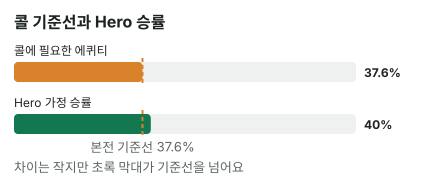

안녕하세요. 오늘은 상대가 리버에 팟보다 더 큰 금액을 건 장면이에요. 그 금액이 마침 Hero 남은 칩 전부라서, 콜하면 Hero는 올인이 돼요.
이런 벳을 맞으면 손이 떨리죠. 칩이 다 걸려 있으니까요. 그런데 계산은 지금까지와 똑같아요. 오히려 올인이라 더 깔끔해요. 오늘은 큰 벳의 기준선이 어디까지 올라가는지, 그리고 그 기준선을 아슬아슬하게 넘는 콜을 어떻게 봐야 하는지 따라가 볼게요.
이 글에서 배울 것
- 오버벳(팟보다 큰 벳)의 필요 에퀴티를 공식으로 구하고, B15 표의 어느 줄에 해당하는지 읽는 법
- 올인 콜이 계산이 가장 깔끔한 콜인 이유
- 승률과 기준선이 가까울 때 무엇을 더 꼼꼼히 봐야 하는지
오늘의 핸드
Hero (BB 자리 · 스택 40BB)
오늘은 캐시 게임이라고 할게요. 상대는 Hero보다 칩이 많아서, Hero 칩이 이 판에 걸 수 있는 전부예요.


프리플랍
상대(BTN) 2.5BB 오픈 → SB 폴드 → Hero 콜
팟 5.5BB
플랍 · 팟 5.5BB


Hero 체크 → 상대 2.75BB 벳(하프팟) → Hero 콜
Hero는 A 원페어, 보드에서 가장 높은 카드와 짝이 맞은 탑페어예요. 키커(같은 페어끼리 붙을 때 승부를 가르는 나머지 카드)는 9.
턴 · 팟 11BB


Hero 체크 → 상대 4.5BB 벳 → Hero 콜
리버 · 팟 20BB


Hero 체크 → 상대 30.25BB 벳 → Hero는 콜? 폴드?
Hero는 40BB로 시작해 지금까지 40 − 2.5 − 2.75 − 4.5 = 30.25BB가 남았어요. 상대 벳이 딱 그만큼이라 콜하면 올인이에요. 팟 20BB에 30.25BB면 팟의 약 1.5배, 오버벳이죠. Hero 핸드 이름은 그대로 탑페어예요.
결론부터 말할게요. 오늘 가정에서는 콜이 이득입니다. 콜할 때마다 평균 1.95BB씩 벌어요. 다만 아주 아슬아슬하게요.
1단계. 콜하려면 몇 번 이겨야 하나 (필요 에퀴티)
용어 한 줄
필요 에퀴티는 "콜해서 본전이 되려면 최소한 이만큼은 이겨야 한다"는 확률이에요. 에퀴티는 이 팟에서 이길 확률이고요.
비싼 표를 사는 것
큰 벳 콜은 비싼 표를 사는 것이에요.
- 표값: Hero 콜 30.25BB
- 당첨되면: 원래 팟 20BB와 상대 벳 30.25BB를 합친 50.25BB가 순이익으로 남아요
표값이 당첨금에 가까워질수록 더 자주 당첨돼야 남겠죠. 하프팟이면 표값의 3배를 노렸는데, 오늘은 표값의 두 배도 안 되는 돈을 노려요.
공식으로 구하기
B06에서 배운 공식, 우리가 낼 돈 ÷ 콜한 뒤 전체 팟이에요.
필요 에퀴티 = 30.25(Hero 콜) ÷ (20(원래 팟) + 30.25(상대 벳) + 30.25(Hero 콜)) = 30.25 ÷ 80.5 = 37.6%
8번 콜해서 3번 이기면
37.6%가 정말 본전 근처인지 직접 따져 볼게요. 8번 콜해서 3번 이긴다고 해요.
- 3번 이김: 3 × 50.25 = 150.75
- 5번 짐: 5 × 30.25 = 151.25
번 돈과 잃은 돈이 거의 같죠. 그래서 이 콜의 기준선은 8번 중 3번쯤이에요.
팟이 얼마든 1.5배면 같아요
팟을 1로 놓으면 1.5배 벳은 1.5, Hero 콜도 1.5예요. 1.5 ÷ (1 + 1.5 + 1.5) = 0.375, 곧 8번 중 3번이죠. B15 표의 1.5배 오버벳 줄과 같아요. 오늘 벳은 1.5배보다 아주 조금 커서 37.6%로 살짝 높게 나온 거예요.
왜 절반에는 닿지 않을까
상대 벳은 Hero가 낼 돈에도, 이기면 받는 돈에도 똑같이 들어가요. 받는 돈은 원래 팟 + 상대 벳이라, 언제나 낼 돈(상대 벳)보다 원래 팟만큼 커요. 그래서 상대가 아무리 크게 걸어도 2번 중 1번까지 이겨야 하는 일은 없어요.
2단계. 오늘의 가정 — Hero가 이길 확률
상대가 벳하는 핸드를 두 묶음으로
상대는 세 번 연달아 벳했고, 마지막엔 팟보다 크게 걸었어요. 그 핸드를 두 묶음으로 나눠 볼게요.
① Hero를 이기는 핸드. 보드 A♦ T♠ 6♠ 2♥ 7♣에서 A♣9♥를 이기는 핸드를 빠짐없이 세면 이래요.
- 키커가 더 높은 A: AK·AQ·AJ
- 투페어(손의 두 장이 보드 두 장과 각각 짝): AT·A7·A6·A2, T7·T6·T2, 76·72·62
- 셋(포켓페어가 보드 한 장과 짝): AA·TT·77·66·22
- 스트레이트(숫자 다섯 장이 연속): 98(6-7-8-9-T)
이 중 리버 7이 새로 만든 핸드가 여섯 종류예요. 98은 턴까지 7만 기다리다 스트레이트가 됐고, A7·T7·76·72는 투페어가, 77은 셋이 됐어요. 특히 A7은 턴까지 키커 9에 밀려 Hero에게 지다가 리버 한 장에 앞질렀죠.
② Hero가 이기는 핸드. Hero를 접게 하려는 블러프(이길 수 없는 핸드로 상대를 접게 만들려는 벳)가 대표적이에요.
- 스페이드 두 장으로 플러시를 노리다 못 맞춘 핸드(예: K♠Q♠, 5♠4♠). 보드에 스페이드가 두 장뿐이라 플러시는 안 됐어요
- K-Q·K-J·Q-J처럼 A-K-Q-J-T 스트레이트를 노리다 빗나간 핸드
A8·A5처럼 키커가 더 낮은 A도 쇼다운에서는 Hero에게 져요. 다만 오늘 가정에서는 이런 핸드가 이 큰 금액으로 벳하지 않는다고 보고, 상대 벳에서는 뺐어요. 다른 A9와는 비겨서 팟을 나눠요.
40%라는 가정
오늘은 "이 상대가 이렇게 벳할 때 Hero가 이길 확률은 40%", 즉 5번 중 2번이라고 가정할게요.
두 묶음으로 바꾸면, 상대가 이 리버에 5번 올인하면 3번은 ①, 2번은 ②라는 뜻이에요(비기는 경우는 빼고 셀게요). 몇 가지씩인지 직접 세는 법은 중급 I27에서 배워요.
3단계. 나란히 놓고 비교하기
B14에서 연습한 그 비교예요.
| 확률 | |
|---|---|
| 콜에 필요한 에퀴티 | 37.6% |
| Hero 가정 승률 | 40% |

40% > 37.6%. 차이는 작지만 콜이에요.
4단계. 돈으로 바꿔 보기 — 5번 콜하면?
- 2번 이김: 한 번에 50.25BB씩 → 100.5BB 벌어요
- 3번 짐: 한 번에 Hero 콜 30.25BB씩 → 90.75BB 잃어요
- 합계: 100.5 − 90.75 = +9.75BB → 한 번에 평균 +1.95BB
콜 평균 손익 = 0.4 × 50.25 − 0.6 × 30.25 = 20.1 − 18.15 = +1.95BB
폴드하면 이 팟에 더 넣지도 받지도 않으니 0BB예요. 그래서 콜이 폴드보다 한 번에 1.95BB 이득이에요.
왜 그럴까: 올인 콜은 왜 계산이 가장 깔끔하고, 왜 아슬아슬할까?
뒤에 남은 베팅이 없어요
턴이나 프리플랍 콜에서는 "이번 결정만 보면"이라는 단서가 붙었죠. 콜한 뒤에도 상대가 또 벳할 수 있어서였어요.
오늘은 그런 걱정이 없어요. 리버인 데다 Hero 칩이 다 들어가니, 콜하면 바로 쇼다운이에요. 그래서 37.6%와 40%의 비교가 그대로 최종 결과가 돼요. 큰 벳이라 무섭지만, 계산만 놓고 보면 가장 믿을 만한 콜이에요.
상대는 Hero 칩보다 더 걸 수 없어요
상대가 Hero 남은 칩보다 많이 걸어도, Hero는 남은 30.25BB만큼만 콜하면 돼요. 넘는 돈은 돌려받거든요. 그러니까 오늘 30.25BB는 상대가 이 판에서 Hero에게 걸 수 있는 가장 큰 벳이에요.
이게 무슨 뜻이냐면, 오늘 기준선 37.6%는 이 판에서 가장 높은 기준선이라는 거예요. 상대가 더 작게 걸면 기준선은 내려가기만 해요.
차이가 작으면 승률 어림이 전부예요
B14에서 본 것처럼 이득은 (승률 − 필요 에퀴티) × 콜한 뒤 팟이에요. 오늘은 (0.4 − (30.25/80.5)) × 80.5 = 0.4 × 80.5 − 30.25 = 32.2 − 30.25 = 1.95BB예요.
팟이 80.5BB나 되는데 남는 건 1.95BB뿐이죠. 괄호 안 차이가 작아서예요. 그래서 이런 콜에서는 공식보다 "상대 올인 5번 중 정말 2번이 ②일까"를 어림하는 쪽이 결론을 정해요. 어림이 조금만 빗나가도 콜과 폴드가 바뀔 수 있어요.
자주 하는 실수
실수 1. "올인은 무서우니까 폴드" 칩을 다 잃을 수 있다는 무서움으로 정하는 습관이에요. 캐시 게임에서 이 콜은 오늘 가정으로 한 번에 평균 1.95BB 이득이었어요. 폴드하면 그 이득을 매번 버리는 셈이에요. 대신 금액의 크기가 아니라 기준선과 승률만 나란히 놓아요.
실수 2. "팟보다 크게 걸었으니 절반은 이겨야 콜" 큰 벳에 놀라 기준선을 너무 높게 잡는 실수예요. 팟의 약 1.5배 벳인데도 기준선은 37.6%였어요. 기준선을 절반으로 잡으면 오늘처럼 40%로 이득인 콜까지 버리게 돼요. 대신 벳을 보면 "팟의 몇 배?"로 바꿔 B15 표의 줄을 꺼내요.
실수 3. "A 탑페어니까 이길 거야" 핸드 이름만 보고 승률을 높게 잡는 실수예요. 오늘 보드에서는 AK·AQ·AJ가 키커로 이기고, 리버 7 한 장으로 A7·T7·76·72가 투페어, 77이 셋, 98이 스트레이트가 됐어요. 기준선이 높은 큰 벳일수록 이런 핸드를 빠뜨리면 승률을 실제보다 크게 보게 돼요. 대신 큰 벳을 맞으면 ①을 보드에서 하나하나 짚어 봐요.
"팟보다 크게 걸었다는 건 오히려 블러프일 가능성이 높은 거 아니에요?"
좋은 질문이에요. 그럴 수도 있고 아닐 수도 있어요. 벳 크기 하나만으로는 알 수 없어요.
큰 벳은 ① 센 핸드로 최대한 많이 받으려는 벳일 수도 있고, ② 블러프로 최대한 세게 접게 하려는 벳일 수도 있어요. 그래서 오늘 가정에서는 A8 같은 중간 핸드는 빼고, 상대 벳이 ①과 ② 양 끝으로 갈린다고 봤어요. 이렇게 센 핸드와 블러프로 양쪽이 나뉜 벳을 양극화된 벳이라고 하는데, 자세한 건 상급에서 다뤄요.
숫자가 뒤집히는 지점
기준은 두 가지예요.
- 상대 벳 크기: 오늘은 Hero 칩이 상한이라 37.6%보다 높은 기준선은 나올 수 없어요. 그래서 오늘 판에서는 벳 크기로는 뒤집히지 않아요. Hero 칩이 더 많았다면 얘기가 달라지죠
- Hero 승률: 뒤집히는 건 이쪽뿐이에요. 승률 어림이 37.6% 아래로 내려가면 폴드예요
선생님의 한마디
큰 벳을 맞으면 이 순서로 해요.
- 칩이 다 걸려도 숨 한 번 쉬고 벳이 팟의 몇 배인지부터 보기
- ①(나를 이기는 핸드)을 보드에서 소리 내듯 하나씩 짚기
- 승률 어림이 기준선과 가까우면, 이 상대가 이 금액으로 블러프할 사람인지 한 번 더 떠올리기
연습 문제 (같은 보드, 같은 Hero 핸드)
홀덤학습 에퀴티 계산기에서 내 카드를 고른 뒤 [콜 수익] 칸에 지금 팟(상대 벳 포함)과 콜 금액을 넣으면 필요 에퀴티가 나와요. 지금 팟 칸에는 팟 20BB에 상대 벳을 더한 값을 넣어요.
문제 1. 이번엔 Hero가 더 많은 칩으로 시작해서, 리버에 상대가 40BB를 걸 수 있었다고 해 볼게요(팟은 똑같이 20BB). Hero 가정 승률은 40% 그대로예요. 콜은 이득일까요?
정답 보기
본전이에요. 필요 에퀴티 = 40 ÷ (20 + 40 + 40) = 40 ÷ 100 = 40%, 승률과 딱 같아요. 콜 손익 = 0.4 × 60 − 0.6 × 40 = 24 − 24 = 0BB. 오늘은 Hero 칩이 30.25BB뿐이라 상대가 이만큼 걸 수 없었어요. 칩이 더 깊으면 상대가 기준선을 더 끌어올릴 수 있다는 뜻이에요.
문제 2. 벳은 30.25BB 그대로인데, 이 상대는 ②를 덜 섞어서 Hero 가정 승률이 3번 중 1번(약 33.3%)이라면?
정답 보기
폴드. 33.3% < 37.6%. 콜 손익 = (1/3) × 50.25 − (2/3) × 30.25 = 16.75 − 20.17 = 약 −3.42BB. 승률이 기준선 아래로 내려가니, 판이 큰 만큼 손해도 커요.
핵심 정리
- 오버벳의 기준선도 공식은 같아요: 우리가 낼 돈 ÷ 콜한 뒤 전체 팟. 팟의 약 1.5배면 8번 중 3번
- 리버 올인 콜은 뒤에 베팅이 없고, 상대가 Hero 칩보다 더 걸 수도 없어요
- 승률과 기준선이 가까우면 이득이 작고, 승률 어림의 정확도가 결론을 정해요
정리하며
오늘은 리버에서 Hero 칩 전부를 거는 팟보다 큰 벳에, 탑페어 A9로 콜할지 정했어요.
30.25 ÷ 80.5로 기준선 37.6%를 구했고, 8번 콜 중 3번 이기면 거의 본전이라는 것도 직접 셈해 봤죠. 가정 승률 40%가 조금 높아서 콜이지만, 차이가 작아 이득은 1.95BB였어요. 계산은 깔끔하지만, 그만큼 승률 어림이 결론을 좌우하는 콜이었어요.
다음 글 B24에서는 오늘 "콜할 때마다 평균 1.95BB"라고 계산한 그 평균에 이름을 붙여요. EV(기대값)가 무엇인지, 여러 번 했을 때 남는지를 처음부터 다뤄요.
AI 작성 · 숫자는 계산 검증 · 가정 승률 기준 · 리버 마지막 결정이라 콜 손익이 최종 결과